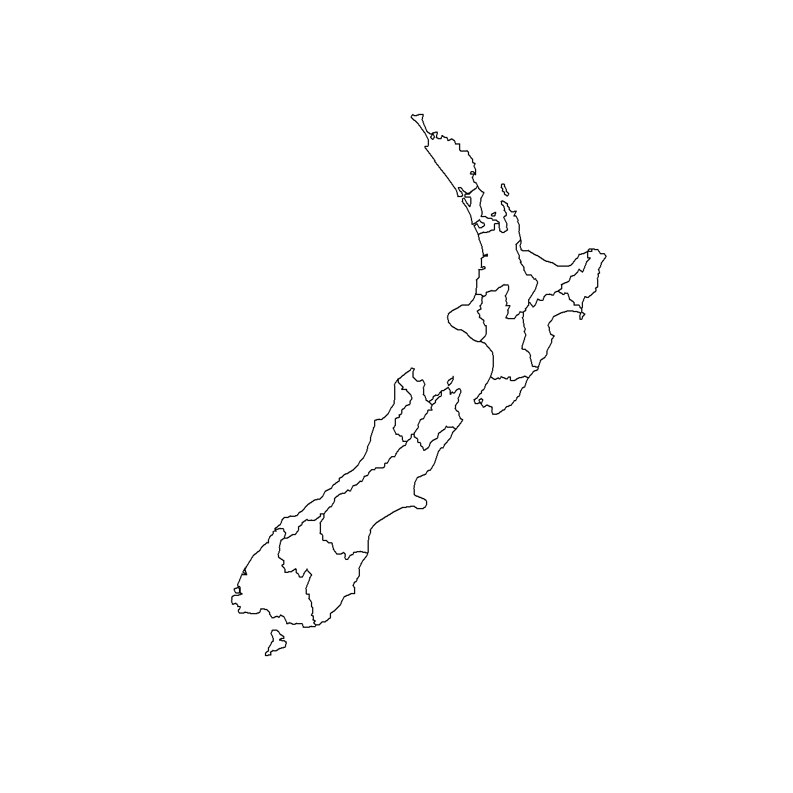
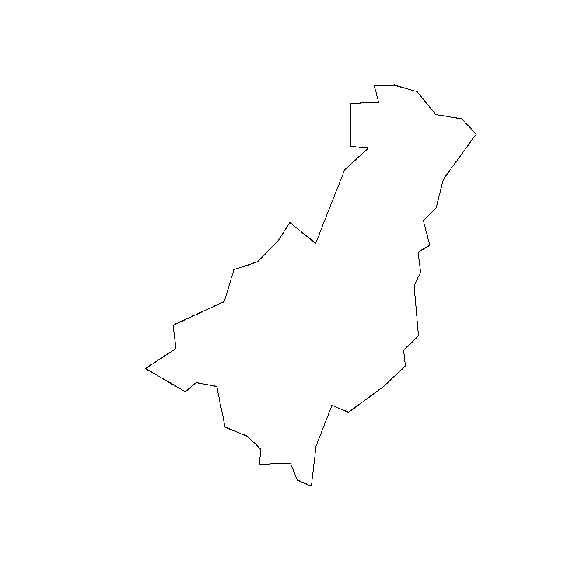
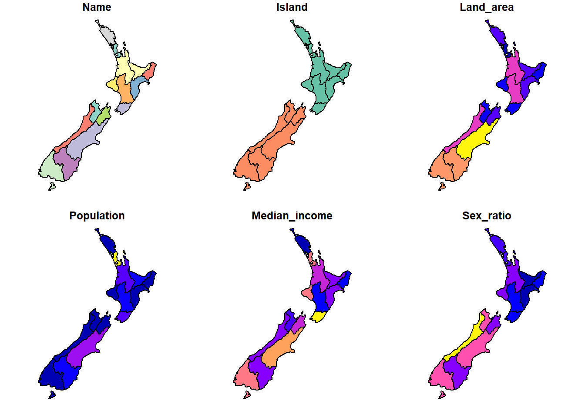

2 Vector data
library(ggplot2)
library(mapview)
library(sf)
library(tmap)2.1 Read data into R
rivers = read_sf("data/nz-river-centrelines-topo-1500k.gpkg")
riversSimple feature collection with 7894 features and 0 fields
Geometry type: MULTILINESTRING
Dimension: XY
Bounding box: xmin: 1090841 ymin: 4753217 xmax: 2085682 ymax: 6190544
Projected CRS: NZGD2000 / New Zealand Transverse Mercator 2000
# A tibble: 7,894 × 1
geom
<MULTILINESTRING [m]>
1 ((1188893 4876720, 1188961 4876789, 1189209 4876888, 1189352 4877037, 118941…
2 ((1212357 4985134, 1212190 4985017, 1212190 4984899, 1212240 4984833, 121222…
3 ((1793234 5835222, 1793051 5835188, 1793001 5835221, 1792804 5835245))
4 ((1237766 4958688, 1237833 4958555, 1237861 4958499, 1237950 4958321, 123818…
5 ((1479132 5112613, 1479112 5112458, 1479143 5112127, 1479307 5111749, 147945…
6 ((1331799 4889014, 1331743 4889153, 1331644 4889637, 1331644 4889652, 133164…
7 ((1421067 5030500, 1421156 5030431, 1421280 5030411, 1421412 5030354, 142154…
8 ((1137668 4888410, 1137186 4888320, 1136813 4888447, 1136732 4888437, 113655…
9 ((1460473 5142519, 1460661 5141978, 1460657 5141736, 1460724 5141519, 146086…
10 ((1473259 5181908, 1473317 5181722, 1473317 5181472, 1473417 5181388, 147353…
# ℹ 7,884 more rows2.2 Projections and transformations
st_crs(rivers)Coordinate Reference System:
User input: NZGD2000 / New Zealand Transverse Mercator 2000
wkt:
PROJCRS["NZGD2000 / New Zealand Transverse Mercator 2000",
BASEGEOGCRS["NZGD2000",
DATUM["New Zealand Geodetic Datum 2000",
ELLIPSOID["GRS 1980",6378137,298.257222101,
LENGTHUNIT["metre",1]]],
PRIMEM["Greenwich",0,
ANGLEUNIT["degree",0.0174532925199433]],
ID["EPSG",4167]],
CONVERSION["New Zealand Transverse Mercator 2000",
METHOD["Transverse Mercator",
ID["EPSG",9807]],
PARAMETER["Latitude of natural origin",0,
ANGLEUNIT["degree",0.0174532925199433],
ID["EPSG",8801]],
PARAMETER["Longitude of natural origin",173,
ANGLEUNIT["degree",0.0174532925199433],
ID["EPSG",8802]],
PARAMETER["Scale factor at natural origin",0.9996,
SCALEUNIT["unity",1],
ID["EPSG",8805]],
PARAMETER["False easting",1600000,
LENGTHUNIT["metre",1],
ID["EPSG",8806]],
PARAMETER["False northing",10000000,
LENGTHUNIT["metre",1],
ID["EPSG",8807]]],
CS[Cartesian,2],
AXIS["northing (N)",north,
ORDER[1],
LENGTHUNIT["metre",1]],
AXIS["easting (E)",east,
ORDER[2],
LENGTHUNIT["metre",1]],
USAGE[
SCOPE["Engineering survey, topographic mapping."],
AREA["New Zealand - North Island, South Island, Stewart Island - onshore."],
BBOX[-47.33,166.37,-34.1,178.63]],
ID["EPSG",2193]]st_transform(rivers, 4326)Simple feature collection with 7894 features and 0 fields
Geometry type: MULTILINESTRING
Dimension: XY
Bounding box: xmin: 166.4349 ymin: -47.24322 xmax: 178.5062 ymax: -34.42658
Geodetic CRS: WGS 84
# A tibble: 7,894 × 1
geom
* <MULTILINESTRING [°]>
1 ((167.6771 -46.139, 167.678 -46.13843, 167.6813 -46.13769, 167.6833 -46.1364…
2 ((168.0661 -45.1806, 168.0639 -45.18155, 168.0638 -45.1826, 168.0644 -45.183…
3 ((175.1892 -37.60982, 175.1872 -37.61016, 175.1866 -37.60987, 175.1843 -37.6…
4 ((168.3691 -45.43137, 168.3698 -45.4326, 168.3701 -45.43312, 168.3711 -45.43…
5 ((171.4891 -44.12969, 171.4889 -44.13108, 171.4892 -44.13407, 171.4911 -44.1…
6 ((169.53 -46.09975, 169.5294 -46.09848, 169.5283 -46.09409, 169.5284 -46.093…
7 ((170.7354 -44.85646, 170.7365 -44.8571, 170.738 -44.85731, 170.7397 -44.857…
8 ((167.0287 -46.00162, 167.0224 -46.00211, 167.0177 -46.00072, 167.0167 -46.0…
9 ((171.2639 -43.85723, 171.2661 -43.86213, 171.266 -43.86431, 171.2667 -43.86…
10 ((171.4322 -43.50501, 171.4328 -43.5067, 171.4328 -43.50895, 171.434 -43.509…
# ℹ 7,884 more rowspar(mar = c(0,0,2,0))
rivers |> plot(main = "EPSG: 2193")
# WGS 84 / Equal Earth Greenwich
st_transform(rivers, 8857) |> plot(main = "EPSG: 8857")
2.3 Geometrical operations
rivers["length"] = st_length(rivers)
riversSimple feature collection with 7894 features and 1 field
Geometry type: MULTILINESTRING
Dimension: XY
Bounding box: xmin: 1090841 ymin: 4753217 xmax: 2085682 ymax: 6190544
Projected CRS: NZGD2000 / New Zealand Transverse Mercator 2000
# A tibble: 7,894 × 2
geom length
<MULTILINESTRING [m]> [m]
1 ((1188893 4876720, 1188961 4876789, 1189209 4876888, 1189352 4877037,… 73029.
2 ((1212357 4985134, 1212190 4985017, 1212190 4984899, 1212240 4984833,… 45755.
3 ((1793234 5835222, 1793051 5835188, 1793001 5835221, 1792804 5835245)) 445.
4 ((1237766 4958688, 1237833 4958555, 1237861 4958499, 1237950 4958321,… 32311.
5 ((1479132 5112613, 1479112 5112458, 1479143 5112127, 1479307 5111749,… 1391.
6 ((1331799 4889014, 1331743 4889153, 1331644 4889637, 1331644 4889652,… 61151.
7 ((1421067 5030500, 1421156 5030431, 1421280 5030411, 1421412 5030354,… 36612.
8 ((1137668 4888410, 1137186 4888320, 1136813 4888447, 1136732 4888437,… 1622.
9 ((1460473 5142519, 1460661 5141978, 1460657 5141736, 1460724 5141519,… 2582.
10 ((1473259 5181908, 1473317 5181722, 1473317 5181472, 1473417 5181388,… 53171.
# ℹ 7,884 more rowsdata("nz", package = "spData")
nzSimple feature collection with 16 features and 6 fields
Geometry type: MULTIPOLYGON
Dimension: XY
Bounding box: xmin: 1090144 ymin: 4748537 xmax: 2089533 ymax: 6191874
Projected CRS: NZGD2000 / New Zealand Transverse Mercator 2000
First 10 features:
Name Island Land_area Population Median_income Sex_ratio
1 Northland North 12500.561 175500 23400 0.9424532
2 Auckland North 4941.573 1657200 29600 0.9442858
3 Waikato North 23900.036 460100 27900 0.9520500
4 Bay of Plenty North 12071.145 299900 26200 0.9280391
5 Gisborne North 8385.827 48500 24400 0.9349734
6 Hawke's Bay North 14137.524 164000 26100 0.9238375
7 Taranaki North 7254.480 118000 29100 0.9569363
8 Manawatu-Wanganui North 22220.608 234500 25000 0.9387734
9 Wellington North 8048.553 513900 32700 0.9335524
10 West Coast South 23245.456 32400 26900 1.0139072
geom
1 MULTIPOLYGON (((1745493 600...
2 MULTIPOLYGON (((1803822 590...
3 MULTIPOLYGON (((1860345 585...
4 MULTIPOLYGON (((2049387 583...
5 MULTIPOLYGON (((2024489 567...
6 MULTIPOLYGON (((2024489 567...
7 MULTIPOLYGON (((1740438 571...
8 MULTIPOLYGON (((1866732 566...
9 MULTIPOLYGON (((1881590 548...
10 MULTIPOLYGON (((1557042 531...summary(nz) Name Island Land_area Population
Length:16 Length:16 Min. : 422.2 Min. : 32400
Class :character Class :character 1st Qu.: 8301.5 1st Qu.: 51325
Mode :character Mode :character Median :12285.9 Median : 169750
Mean :16505.5 Mean : 299200
3rd Qu.:23409.1 3rd Qu.: 339950
Max. :44504.5 Max. :1657200
Median_income Sex_ratio geom
Min. :23400 Min. :0.9238 MULTIPOLYGON :16
1st Qu.:26000 1st Qu.:0.9346 epsg:2193 : 0
Median :27050 Median :0.9477 +proj=tmer...: 0
Mean :27375 Mean :0.9518
3rd Qu.:29200 3rd Qu.:0.9613
Max. :32700 Max. :1.0139 (gisborne = nz[nz$Name == "Gisborne", ])Simple feature collection with 1 feature and 6 fields
Geometry type: MULTIPOLYGON
Dimension: XY
Bounding box: xmin: 1959096 ymin: 5674920 xmax: 2089533 ymax: 5833212
Projected CRS: NZGD2000 / New Zealand Transverse Mercator 2000
Name Island Land_area Population Median_income Sex_ratio
5 Gisborne North 8385.827 48500 24400 0.9349734
geom
5 MULTIPOLYGON (((2024489 567...rivers |> st_intersection(gisborne)Error in geos_op2_geom("intersection", x, y, ...): st_crs(x) == st_crs(y) is not TRUEgisborne = st_transform(gisborne, st_crs(rivers))
rivers |> st_intersection(gisborne)Warning: attribute variables are assumed to be spatially constant throughout
all geometriesSimple feature collection with 286 features and 7 fields
Geometry type: GEOMETRY
Dimension: XY
Bounding box: xmin: 1964161 ymin: 5676307 xmax: 2085682 ymax: 5829474
Projected CRS: NZGD2000 / New Zealand Transverse Mercator 2000
# A tibble: 286 × 8
length Name Island Land_area Population Median_income Sex_ratio
* [m] <chr> <chr> <dbl> <dbl> <int> <dbl>
1 25580. Gisborne North 8386. 48500 24400 0.935
2 55146. Gisborne North 8386. 48500 24400 0.935
3 30760. Gisborne North 8386. 48500 24400 0.935
4 28458. Gisborne North 8386. 48500 24400 0.935
5 29961. Gisborne North 8386. 48500 24400 0.935
6 25386. Gisborne North 8386. 48500 24400 0.935
7 28251. Gisborne North 8386. 48500 24400 0.935
8 28476. Gisborne North 8386. 48500 24400 0.935
9 29663. Gisborne North 8386. 48500 24400 0.935
10 9291. Gisborne North 8386. 48500 24400 0.935
# ℹ 276 more rows
# ℹ 1 more variable: geom <LINESTRING [m]>rivers |> st_join(gisborne, left = FALSE, join = st_intersects)Simple feature collection with 286 features and 7 fields
Geometry type: MULTILINESTRING
Dimension: XY
Bounding box: xmin: 1964161 ymin: 5665081 xmax: 2085682 ymax: 5830551
Projected CRS: NZGD2000 / New Zealand Transverse Mercator 2000
# A tibble: 286 × 8
geom length Name Island Land_area Population
* <MULTILINESTRING [m]> [m] <chr> <chr> <dbl> <dbl>
1 ((2020380 5682629, 2020497 5682630,… 25580. Gisb… North 8386. 48500
2 ((2047236 5739047, 2047119 5738963,… 55146. Gisb… North 8386. 48500
3 ((1992989 5756684, 1992939 5756835,… 30760. Gisb… North 8386. 48500
4 ((2009450 5761922, 2009383 5761988,… 28458. Gisb… North 8386. 48500
5 ((2059935 5763492, 2059842 5763462,… 29961. Gisb… North 8386. 48500
6 ((2027788 5774462, 2027789 5774211,… 25386. Gisb… North 8386. 48500
7 ((2035023 5793818, 2035107 5793618,… 28251. Gisb… North 8386. 48500
8 ((2064446 5774410, 2064479 5774661,… 28476. Gisb… North 8386. 48500
9 ((2083085 5804913, 2082742 5805001,… 29663. Gisb… North 8386. 48500
10 ((1998917 5702907, 1998927 5702908,… 9291. Gisb… North 8386. 48500
# ℹ 276 more rows
# ℹ 2 more variables: Median_income <int>, Sex_ratio <dbl>rivers |> st_join(gisborne, left = FALSE, join = st_within)Simple feature collection with 248 features and 7 fields
Geometry type: MULTILINESTRING
Dimension: XY
Bounding box: xmin: 1967989 ymin: 5687240 xmax: 2085682 ymax: 5829458
Projected CRS: NZGD2000 / New Zealand Transverse Mercator 2000
# A tibble: 248 × 8
geom length Name Island Land_area Population
* <MULTILINESTRING [m]> [m] <chr> <chr> <dbl> <dbl>
1 ((2047236 5739047, 2047119 5738963,… 55146. Gisb… North 8386. 48500
2 ((2009450 5761922, 2009383 5761988,… 28458. Gisb… North 8386. 48500
3 ((2059935 5763492, 2059842 5763462,… 29961. Gisb… North 8386. 48500
4 ((2027788 5774462, 2027789 5774211,… 25386. Gisb… North 8386. 48500
5 ((2064446 5774410, 2064479 5774661,… 28476. Gisb… North 8386. 48500
6 ((1998917 5702907, 1998927 5702908,… 9291. Gisb… North 8386. 48500
7 ((2001680 5712195, 2001746 5712112,… 8166. Gisb… North 8386. 48500
8 ((2068319 5787066, 2067617 5787365,… 6851. Gisb… North 8386. 48500
9 ((2058857 5789186, 2058757 5789287,… 8277. Gisb… North 8386. 48500
10 ((2070487 5798783, 2070335 5799153,… 8971. Gisb… North 8386. 48500
# ℹ 238 more rows
# ℹ 2 more variables: Median_income <int>, Sex_ratio <dbl>rivers |> st_filter(gisborne, .predicate = st_within)Simple feature collection with 248 features and 1 field
Geometry type: MULTILINESTRING
Dimension: XY
Bounding box: xmin: 1967989 ymin: 5687240 xmax: 2085682 ymax: 5829458
Projected CRS: NZGD2000 / New Zealand Transverse Mercator 2000
# A tibble: 248 × 2
geom length
* <MULTILINESTRING [m]> [m]
1 ((2047236 5739047, 2047119 5738963, 2047119 5738846, 2047002 5738779,… 55146.
2 ((2009450 5761922, 2009383 5761988, 2009365 5762322, 2009332 5762372,… 28458.
3 ((2059935 5763492, 2059842 5763462, 2059015 5763608, 2059005 5763649,… 29961.
4 ((2027788 5774462, 2027789 5774211, 2027839 5774111, 2027956 5773978,… 25386.
5 ((2064446 5774410, 2064479 5774661, 2064680 5774745, 2064713 5774812,… 28476.
6 ((1998917 5702907, 1998927 5702908, 1999151 5702924, 1999234 5702834,… 9291.
7 ((2001680 5712195, 2001746 5712112, 2001747 5711995, 2001663 5711761,… 8166.
8 ((2068319 5787066, 2067617 5787365, 2067366 5787398, 2067249 5787482,… 6851.
9 ((2058857 5789186, 2058757 5789287, 2058590 5789253, 2058556 5789286,… 8277.
10 ((2070487 5798783, 2070335 5799153, 2070277 5799363, 2070312 5799653,… 8971.
# ℹ 238 more rowsCode
par(mar = c(0,0,2,0))
int = rivers |> st_filter(gisborne, .predicate = st_intersects)
with = rivers |> st_filter(gisborne, .predicate = st_within)
plot(gisborne$geom, border = "red", col = NA, main = "st_intersects")
plot(rivers$geom, col = "grey90", alpha = 0.5, add = TRUE)
plot(int$geom, col = "blue", add = TRUE)
plot(gisborne$geom, border = "red", col = NA, main = "st_within")
plot(rivers$geom, col = "grey90", alpha = 0.5, add = TRUE)
plot(with$geom, col = "blue", add = TRUE)

Mention DE-9IM.
2.4 Plot spatial data
2.4.1 Base R
plot(nz)
2.4.2 ggplot2
ggplot(nz) +
geom_sf(aes(fill = Population))2.4.3 tmap v.4
tm_shape(nz) +
tm_fill("Name") +
tm_shape(rivers) +
tm_lines(col = "white", lwd = 0.7) +
tm_scalebar()2.4.4 mapview
mapview(nz, zcol = "Median_income")